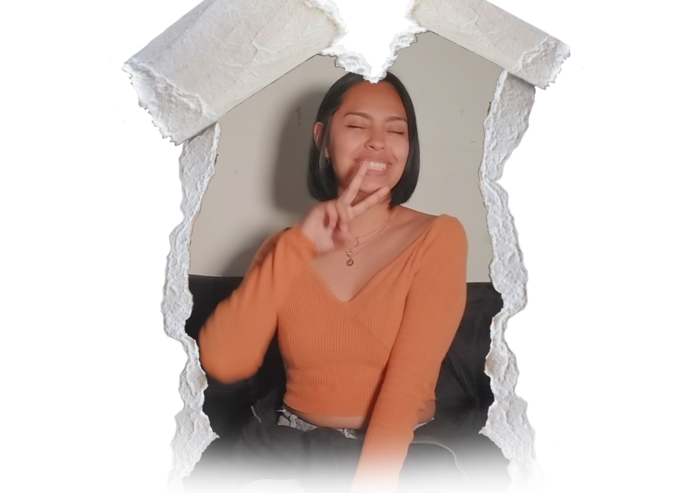
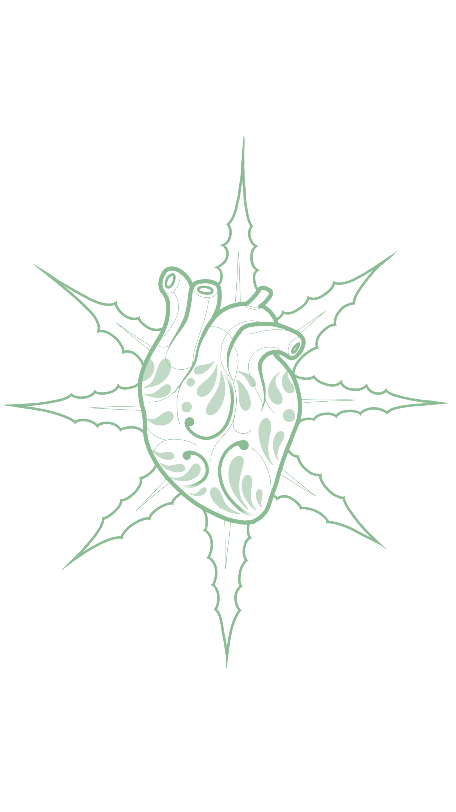
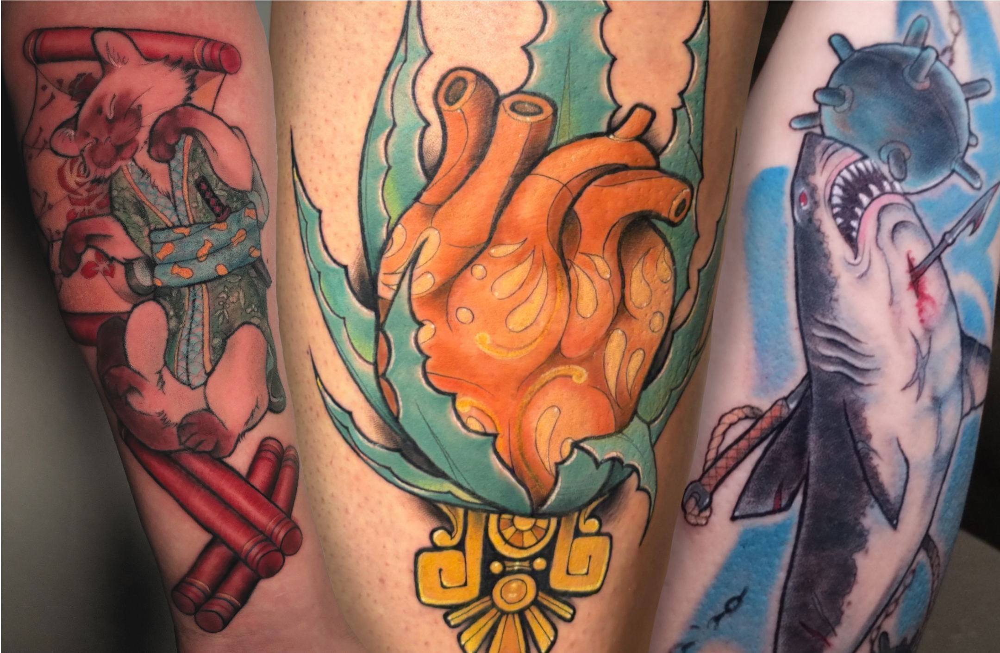
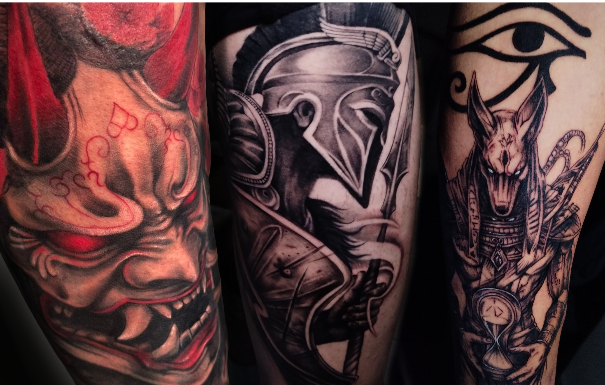
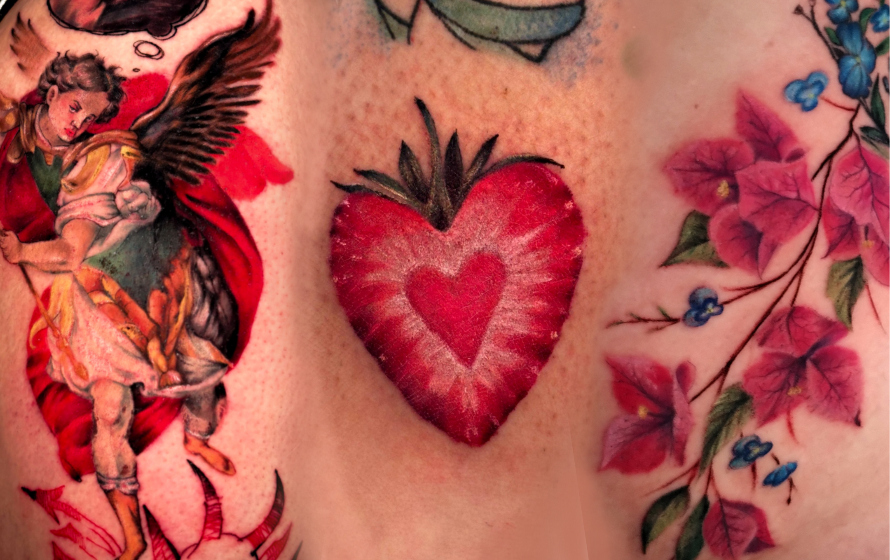
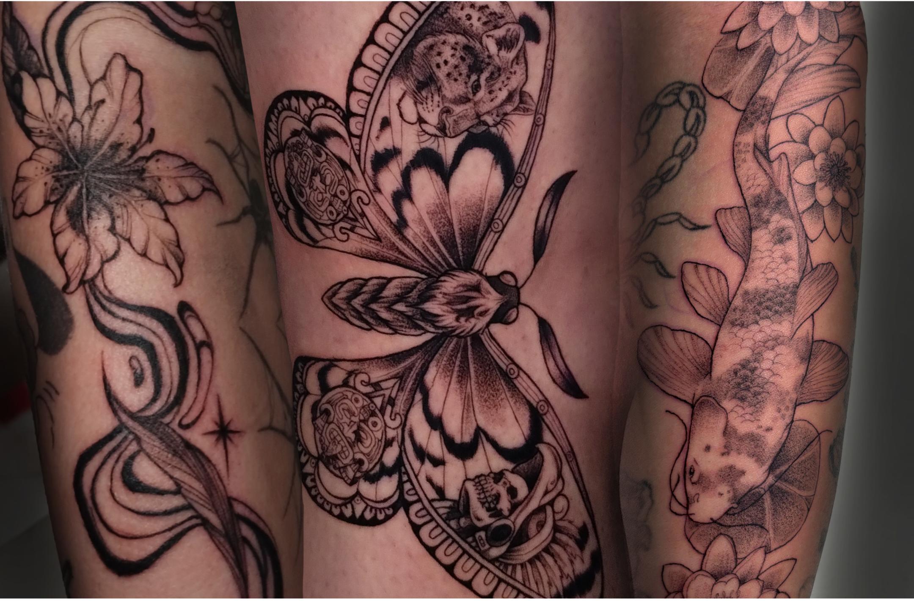
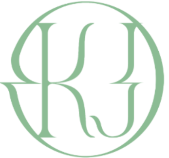

Soy tatuadora especializada en Neotradicional, Realismo y Blackwork. Transformo ideas y emociones en piezas con identidad, contraste y significado, creando tatuajes que conectan contigo y se vuelven parte de tu historia
Cuéntame tu idea y la transformamos en algo único para ti.
El tatuaje para mí es una forma de expresar lo que a veces no se puede decir con palabras. Trabajo desde la emoció, conectando con cada idea para interpretarla y convertirla en una pieza única.
Cada diseño es un proceso íntimo donde tu historia y mi estilo se encuentran.
Estos son algunos de los estilos que abarco:

Color, fuerza y composición con carácter.

Detalles que capturan lo real y lo emocional.

Detalles que capturan lo real y lo emocional.

Contraste, sombras y profundidad con identidad.
Para citas y cotizaciones
Agenda tu cita